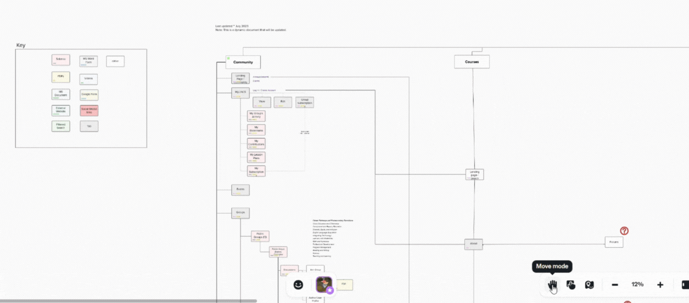
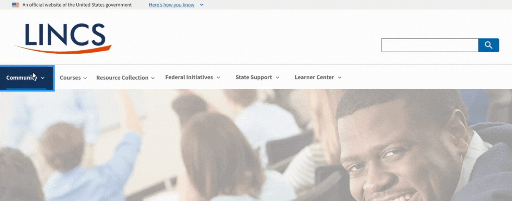
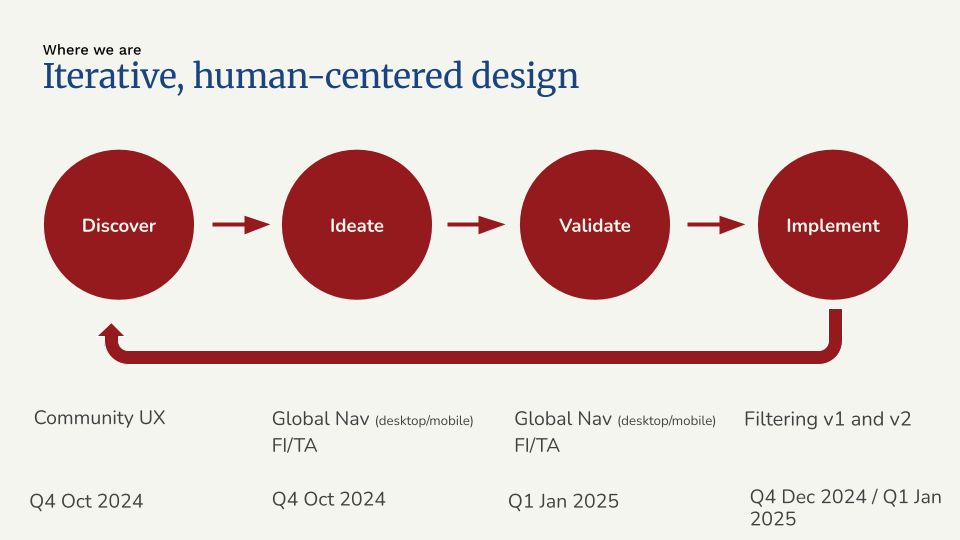
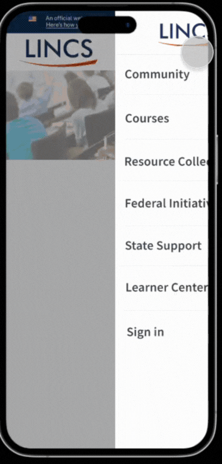

The Challenge: Websites That Didn’t Feel Connected
The Department of Education’s Literacy Information and Communication System (LINCS) is a website offering free, evidence based resources, professional development and community for adult education practitioners. When we first looked at the site we saw a common problem: several websites that needed to work together but didn’t.
“LINCS is our go-to. It’s what we send our teachers to. There’s lots of wonderful things right there. So we want it to be user-friendly and we want it to be easy to find it. We need this site.” ~ User Tester
Based on what we knew from our UX research, this created several headaches for users:
- Content organized around internal departments rather than topics adult education practioners were looking for
- Navigation that worked differently as you moved through the site
- The same information appearing in multiple places
- Too much empty space making sections feel disconnected
- Top navigation disappearing when scrolling through long pages
- Growing content that overwhelmed everyone — users, content partners, and the admin team
“There is such good stuff, but it’s so overwhelming. A lot of people get lost. They have to find exactly what they need…” — User Tester
Discovery: Creating a Map of the Content Jungle
Before jumping to solutions, we needed to understand what we were working with. We built a detailed site map in Mural that showed us the entire LINCS ecosystem. This map helped us:
- See how everything connected (or didn’t)
- Create a starting point to measure our improvements
- Build a working document we could update as we made changes
- Spot redundancies and gaps in the content

The mapping exercise revealed just how disjointed the experience was. Users had to learn new navigation patterns as they moved between sections, with no consistent way to know where they were in the larger system. For instance, there were consistent navigation elements across sections like a side-navigation, or breadcrumbs.
Why a Mega Menu Made Sense
After talking with stakeholders and analyzing the content, we decided a mega menu approach would best bring everything together. Here’s why:
Familiarity Builds Confidence
When navigation works the same way throughout a website, users quickly learn how to get around. This consistency builds confidence and reduces frustration, letting people focus on finding information rather than figuring out how the website works. This meant significant cleanup and reorganization to create paths that made sense to real people (which we validated via user testing).
Organizing Around User Needs
We emphasized ‘sneak peak’ content in each megamenu to help users understand what they could find in each section, and the value to their goals as adult education practitioners. This required multiple co-design workshops with subject matter experts to ensure the ‘sneak peak’ content were user-friendly, concise, clear, and plain language.
“These pages have so much text. If you haven’t been in it, and you don’t know how to find stuff, it’s overwhelming.” ~User Tester
Building on Proven Standards
We built our mega menu using the U.S. Web Design System (USWDS) components. This approach not only modernized the look and feel but ensured we met accessibility requirements and could implement changes efficiently.
All 7 users in two rounds of usability testing sessions rated the user experience / navigation experience a 4 or 5 (1 = poor, 5 = excellent).

Working Together to Get It Right
Creating an effective mega menu wasn’t just a design task — it required teamwork:
- We held regular feedback sessions with content owners
- Co-worked with stakeholders to make navigation labels clear and straightforward
- Made sure the mega menu previewed what users would find in each section
- Highlighted priority user groups like “Learners” based on stakeholder feedback
- Conducted usability testing to validate assumptions in prototypes

We also had regular dev-design synchs to address technical challenges and ensure we’re all aligned so we could:
- Leverage USWDS navigation components that worked across different platforms
- Keep navigation visible during scrolling
- Design for all screen sizes, from phones to desktops (the mobile prototype shows a much cleaner, slicker navigation experience).
This collaborative approach meant taking time to show why a mega menu would make things better.

All 7 users ranked the new mobile navigation experience a 4 or 5 (1 = poor, 5 = excellent)
The Result: A Website That Feels Unified
The mega menu transformed LINCS from feeling like separate websites into one cohesive experience. Now users can:
- Move between different areas while always knowing where they are
- Find related resources that were previously hidden in other sections
- See all available content options at a glance
- Keep their place even when deep into content
What We Learned
This project taught us several important lessons about navigation design:
- Good navigation does more than direct traffic — It creates a framework that brings content together
- User needs should drive organization — How people look for information matters more than internal structures
- Taking time to demonstrate value pays off — Showing the benefits of better navigation helps build support
- Using design systems saves time and creates consistency — USWDS gave us proven patterns we could implement quickly
- Iterative usability testing into our design process helped validate our prototypes, giving us the data to influence stakeholders and team members as we marched forward to implementation
By treating navigation as the glue that holds everything together, we helped turn a fragmented collection of websites into a unified resource that better serves users while being easier to maintain.
Note: This article describes work completed prior to March 2025. It has yet to be deployed.